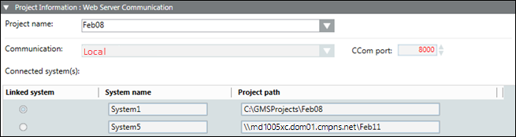

Project Information: Web Server Communication
This expander allows you to select and link a project on Server to the web application. Depending on the Server project selected, the communication mode, the CCom port number, the system name, project path are automatically set. You cannot edit them here.

NOTE:
With Version 5.0, the Unsecured communication type is replaced with Local. It is recommended to configure the communication of all remote web applications to Secured as Unsecured communication will not work.

When you link a Sever project to a web application, a URL is created that points to the linked project. You can work with Windows App Client using this web application URL.
Ensure that both, the linked Server project and the parent website, are started. Only then can you launch the Windows App Client. Windows App client cannot be launched if you create a web application without linking it to a project.
In distributed environment, in addition to the linked system name (system name associated with the project linked to the web application), the system names of all the projects in distribution with the project linked to the web application are also displayed. You can work with all the projects (whose system names are listed) in distribution with the linked project when you launch the Windows App client. Note that for this the web application user must be added in the list of allowed users in the Project Shares expander of the systems in the distribution.